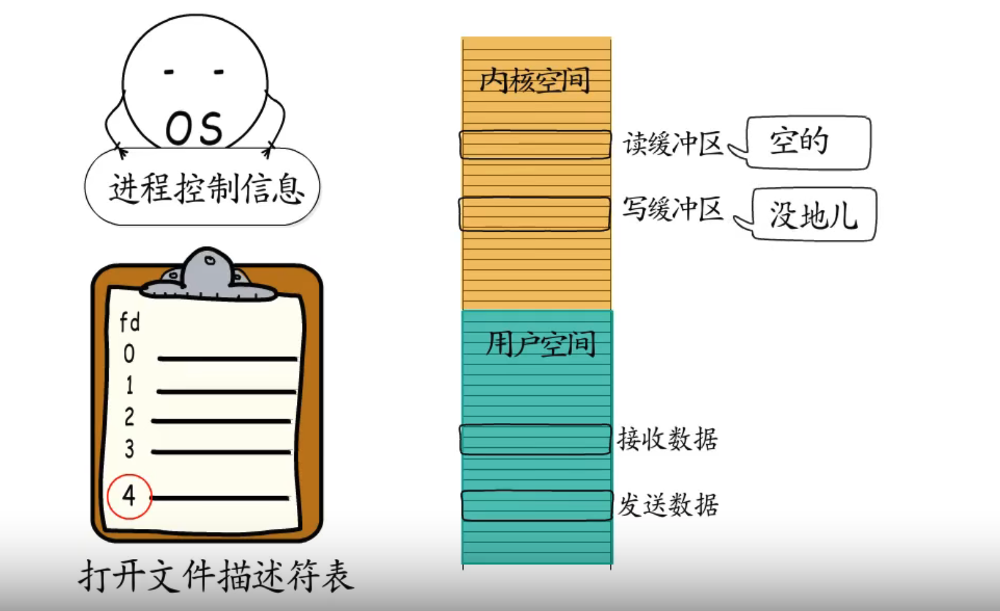
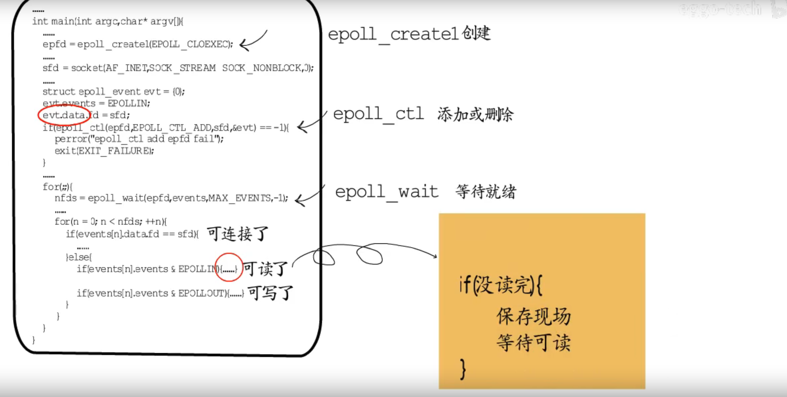

协程
- 线程中的执行体，用户态线程，只有用户栈，没有内核栈
- 每个协程有自己的执行栈，可以保存自己的执行线程，用户态进程调度
IO多路复用

阻塞式IO
线程让出CPU进入等待队列，等socket就绪后获得时间片继续执行
非阻塞式IO
不让出CPU，频繁检查socket是否就绪，一种“忙等待”方式，耗CPU，加剧延时
IO多路复用
操作系统提供支持，将需要等待的socket加入监听集合 ，通过1次系统调用同时监听多个socket
select 等待有事件就绪或超时就会返回
- 传入fd_set 只有1024位，只能监听1024个fd
- 每次传入所有监听集合，内核态用户态数据拷贝频繁
- 返回后，每次遍历多有集合
poll
采用struct传递fd,数量不受限制，但其它问题依然存在
epoll
Epoll_creat: 创建一个epoll并获取一个句柄
Epoll_ctl: 用于添加或删除fd与对应的事件信息
Epoll_wati: 返回已经就绪的fd
